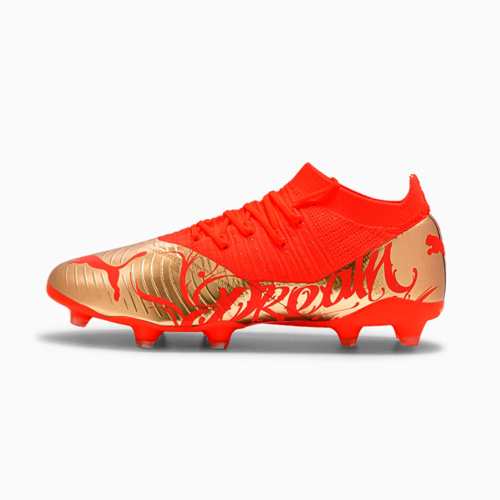

superfly8

Desbloqueie o segredo da velocidade com a Nike Mercurial Superfly 8 Pro. O color block nas laterais e no antepé destaca as áreas principais para driblar, passar e lançar com precisão. A placa inovadora proporciona agilidade imediata para cortes mais rápidos em alta velocidade.
FUTURE 3.4 NJR

Mais adaptável e confortável do que nunca, a avançada FUTURE é uma chuteira progressiva e explosiva para jogadores que moldam o jogo de acordo com sua visão e habilidade.Você não precisa usar cadarços para prender. A tecnologia FUZIONFIT+ de segunda geração se adapta ao formato do seu pé para oferecer o equilíbrio perfeito de suporte e flexibilidade em cada uma das zonas-mais importantes, garantindo ajuste e desempenho ideais, com ou sem amarração.A sola leve e reativa com a tecnologia Dynamic Motion System transfere sua energia diretamente para o campo, proporcionando tração superior para movimentos multidirecionais explosivos.As Advanced Creator Zones estão estrategicamente posicionadas na área do antepé para oferecer toque excepcional e controle de bola em alta velocidade.